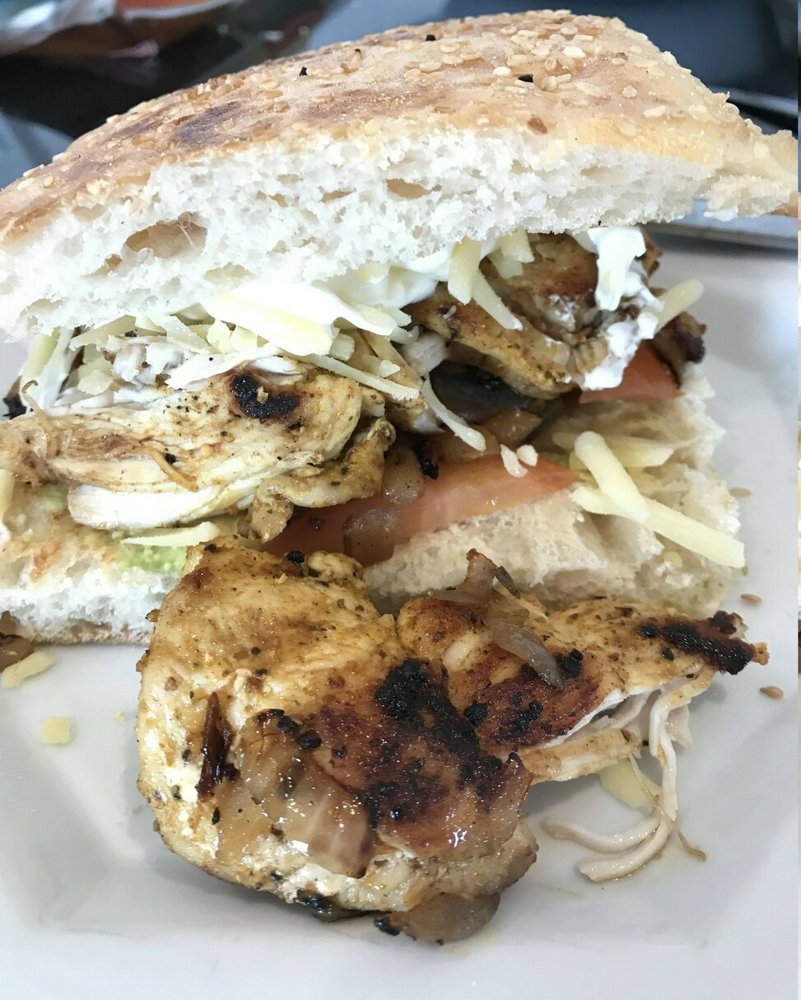

Morrocan Chicken Burgers
 Meat
Meat

- chicken thighs
- Harissa & Morrocan spice
- 1 red onion
- greek yoghurt
Cut up chicken thighs and marinate in harissa and morrocan spice and oil
Cook on BBQ or pan fry with red onion
Chuck on a burger with greek yohurt and salad